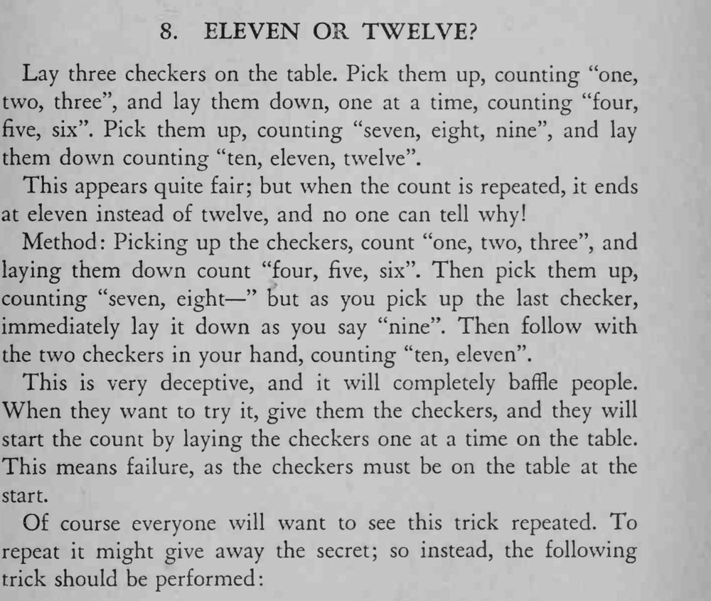

三枚棋子反复拿起、放下，明明数到了十二，再数一遍却只能数到十一，谁也看不出少在哪里。
观众自己试时会先把棋子一枚枚放上桌再数，所以必然失败；想再演一遍容易露底，最好接着演下一个节目。

Lay three checkers on the table. Pick them up, counting "one, two, three", and lay them down, one at a time, counting "four, five, six". Pick them up, counting "seven, eight, nine", and lay them down counting "ten, eleven, twelve". This appears quite fair; but when the count is repeated, it ends at eleven instead of twelve, and no one can tell why! Method: Picking up the checkers, count "one, two, three", and laying them down count — "four, five, six". Then pick them up, counting "seven, eight " but as you pick up the last checker, immediately lay it down as you say "nine". Then follow with the two checkers in your hand, counting "ten, eleven". This is very deceptive, and it will completely baffle people. When they want to try it, give them the checkers, and they will start the count by laying the checkers one at a time on the table. This means failure, as the checkers must be on the table at the start. Of course everyone will want to see this trick repeated. To repeat it might give away the secret; so instead, the following trick should be performed